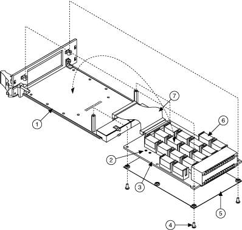

When inductive loads are connected to the relays, a large counter electromotive force may occur at relay switching time because of the energy stored in the inductive load. These flyback voltages can severely damage the relay contacts and significantly shorten the life of the relay.
You can limit flyback voltages at your inductive load by installing a flyback diode for DC loads or a varistor for AC loads. The NI PXI-2565 switch module has solder connections for a diode or varistor. With this diode/varistor installed, you can limit flyback voltages when switching inductive loads.
|
Caution Before installing the diode or varistor in your module, ensure that no signals are connected to your module front connector. |
Before installing your switch module in the PXI chassis, install the diode/varistor by performing the steps described in the following sections.
To disassemble the module, complete the following steps, referring to the parts locator diagram as needed.
 |
Note Properly grounding yourself prevents damage to your module from electrostatic discharge. |
|  | ||||||||||||||||
|
Complete the following steps to install the diode/varistor.
Complete the Disassemble the Module steps in reverse order to reassemble your module.